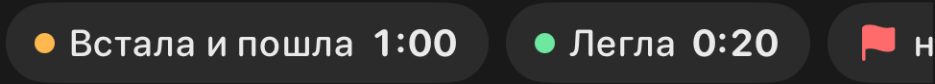
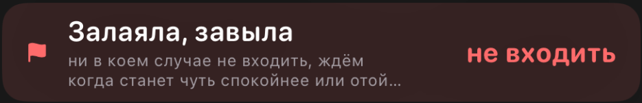

Меняем только иконку и подпись
Чип на карточке и плашка в шторке остаются того же размера, без новых кнопок. Меняются только 🚩 и «не входить» / «don’t come in». Сейчас флаг не означает «подожди», а «не входить» без контекста звучит как команда прямо сейчас.


В макетах ниже чип стоит первым, потому что на mini последний чип уходит за край. Карточка от этого не растёт. Если не нужно, оставлю его на прежнем месте.
Варианты
Нажмите на карточку, чтобы выбрать. Переключатель «Подпись» вверху меняет текст рядом с иконкой во всех вариантах сразу. Розовая метка значит, что иконку нарисовал Claude, голубая — Codex (GPT-6 Astra).
Ниже каждая иконка в чипе и в плашке, в реальном размере iPhone.